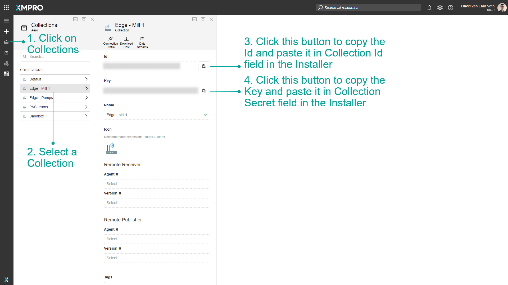

Stream Host Azure Terraform
Introduction
This guide covers deploying XMPro Stream Host with the Azure Terraform module, infra-azureac. The platform deployment includes a Stream Host, and you can add more Stream Hosts to the same deployment, each connected to its own Collection.
Note
From v4.7.0, XMPro syncs the Terraform module, infra-azureac, into a Git repository your organization hosts. The repository URL {{TERRAFORM_MODULE_URL}} on this page is an example. Replace it with your own.
Prerequisites
Ensure you have completed the Azure Terraform Prerequisites which covers:
- Terraform installation
- Azure CLI setup and authentication
- Azure subscription requirements
For each additional Stream Host, you also need:
- A deployed XMPro platform, from Deploy XMPro on Azure
- A Collection ID and Secret from Data Stream Designer
Sizing Recommendations
The Terraform module allows you to configure Stream Host resources based on your workload:
| Workload Type | CPU Cores | Memory (GB) | Use Case |
|---|---|---|---|
| Small (Default) | 1 | 4 | Light data processing, few agents |
| Medium | 2 | 8 | Moderate workloads, multiple agents |
| Large | 4 | 16 | Heavy processing, complex transformations |
Configuration Limits:
- CPU: 0.25 to 4 cores
- Memory: 0.5 to 16 GB
Tip
Start with the default configuration (1 CPU, 4 GB RAM) and scale up based on monitoring metrics.
Deployment Options
With the XMPro Platform
The application layer of the layered example, examples/layered/app, deploys one Stream Host Container Instance for each entry in its stream_hosts map. Each entry connects to its own Collection. The map key becomes the container name suffix: ci-<company_name>-sh-<key>.
Standalone Stream Host
infra-azureac has no standalone Stream Host example. To run a Stream Host against an existing Data Stream Designer without deploying the platform, use the Stream Host Docker installation.
Quick Start
Clone the repository and open the application layer
git clone {{TERRAFORM_MODULE_URL}}.git cd infra-azureac/examples/layered/appAdd an entry to
stream_hostsinterraform.tfvarsstream_hosts = { "sh01" = { collection_id = "<collection id from DS>" collection_secret = "<collection secret from DS>" } }Deploy
terraform init terraform plan terraform apply terraform output stream_hosts_summary
For every setting, see the Step 3: Additional Stream Hosts section of the README.md in your infra-azureac repository.
Getting Collection Credentials
Each Stream Host needs collection credentials from Data Stream Designer:
- Open your XMPro Data Stream Designer
- Navigate to Collections
- Select or create a collection for the Stream Host
- Go to Settings tab
- Copy the Collection ID and Collection Secret

Key Configuration Settings
Each entry in stream_hosts accepts these settings:
Resource Allocation
- cpu: CPU cores (0.25 to 4, default 1)
- memory: Memory in GB (0.5 to 16, default 4)
Docker Image Variants
- variant: Choose the Docker image variant (default:
""which is the same as"bookworm-slim", other options:"bookworm-slim-python3.12","alpine3.21") - imageversion: Image version for this Stream Host (default:
"", which uses the deployment'simageversion)
Environment Variables
- SH_PIP_MODULES: Python packages to install (only available with
bookworm-slim-python3.12variant) - ADDITIONAL_INSTALLS: System packages to install (works with all variants - APT for Debian, APK for Alpine)
- Custom variables: Any additional environment variables (works with all variants)
Set these in the entry's environment_variables map. Entries also accept volumes, a list of Azure File share or secret volumes. The stream_hosts type in examples/layered/app/variables.tf lists every setting.
Common Configuration Examples
Python Package Installation
Install Python packages for data processing:
# In your terraform.tfvars
stream_hosts = {
"sh01" = {
collection_id = "<collection id from DS>"
collection_secret = "<collection secret from DS>"
# The Python variant is required for pip packages
variant = "bookworm-slim-python3.12"
environment_variables = {
"SH_PIP_MODULES" = "pandas numpy scikit-learn"
}
}
}
System Dependencies
Install additional system packages:
# In your terraform.tfvars
stream_hosts = {
"sh01" = {
collection_id = "<collection id from DS>"
collection_secret = "<collection secret from DS>"
# Use the Python variant if you need both Python and system packages
variant = "bookworm-slim-python3.12"
environment_variables = {
"ADDITIONAL_INSTALLS" = "git build-essential python3-dev" # Works with all variants
"SH_PIP_MODULES" = "pandas numpy scikit-learn tensorflow" # Only works with Python variant
}
}
}
Important
The SH_PIP_MODULES and PIP_REQUIREMENTS_PATH environment variables only work with the bookworm-slim-python3.12 variant. The ADDITIONAL_INSTALLS variable works with all variants (APT for Debian variants, APK for Alpine). See Docker Variants documentation for details.
Resource Scaling
Adjust resources based on your workload requirements:
# In your terraform.tfvars
stream_hosts = {
# Medium workload
"sh01" = {
collection_id = "<collection id from DS>"
collection_secret = "<collection secret from DS>"
cpu = 2
memory = 8
}
# Large workload
"sh02" = {
collection_id = "<collection id from DS>"
collection_secret = "<collection secret from DS>"
cpu = 4
memory = 16
}
}
For alerting, volume mounts and a Stream Host that connects to a different Data Stream Designer (stream_host_ds_server_url), see the Step 3: Additional Stream Hosts section of the README.
Troubleshooting
Stream Host Not Connecting
If the Stream Host doesn't appear in Data Stream Designer:
Check container logs
az container logs --resource-group <rg-name> --name ci-<company_name>-sh-<key>Verify environment variables
az container show --resource-group <rg-name> --name ci-<company_name>-sh-<key> --query "containers[0].environmentVariables"Check network connectivity
- Ensure DS server URL is accessible
- Verify no firewall blocking outbound connections
Other Common Issues
For comprehensive troubleshooting including:
- Python package installation failures (ensure you're using
bookworm-slim-python3.12variant) - Resource allocation problems
- Network connectivity issues
- Container restart loops
Refer to the Troubleshooting section of the README.md in your infra-azureac repository, and Azure Terraform Troubleshooting.
Best Practices
Start Simple
- Use the example configuration as a starting point
- Test with minimal configuration first
- Add complexity incrementally
Version Control
- Store your Terraform configurations in version control
- Use
.gitignorefor sensitive files - Tag deployments for easy rollback
Security
- Never commit credentials to version control
- Use Azure Key Vault for secrets
- Enable managed identities where possible
Monitoring
- Always configure Application Insights
- Set up alerts for critical metrics
- Review logs regularly
In Your infra-azureac Repository
examples/layered/app/stream-hosts.tf- how thestream_hostsmap becomes Container Instancesexamples/layered/app/variables.tf- thestream_hoststype, with every settingmodules/_app/stream-host-container- the Stream Host module and its inputsREADME.md, Step 3: Additional Stream Hosts - configuration and alerting
Related Documentation
- Stream Host Docker Installation - For standalone Docker deployments
- Collection and Stream Host Concepts - Understanding Stream Host architecture
- Azure Terraform Deployment Guide - Complete platform deployment guide
Next Steps
After deployment:
- Access Data Stream Designer to verify Stream Host connection
- Create your first data stream
- Configure agents and connectors
- Monitor performance and adjust resources as needed
Last modified: November 03, 2026